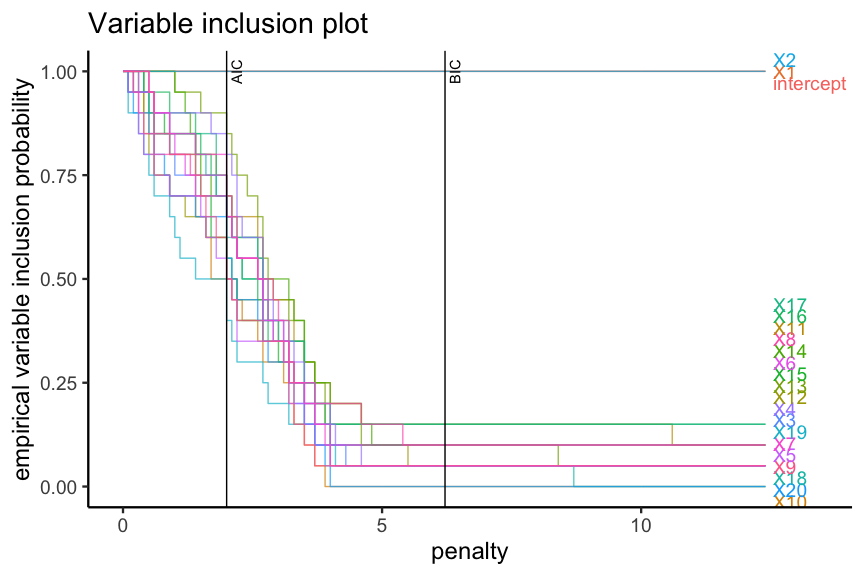

APproximated Exhaustive Search (APES) is a model selection method for Generalised Linear Models. The accompanying paper is Wang et. al. (2019). You can find the vignette here.
Installation
library(devtools) devtools::install_github("kevinwang09/APES")
A quick example
Suppose we have a data with 500 rows and 20 variables, and we have fitted a logistic regression model. We may wish to perform an exhaustive variable selection on such a model to determine which variables produce the most parsimonious model. However, performing an exhaustive variable selection means looking through 2^20 = 1,048,576 models! Exhaustive variable selection is known to be time consuming, and this might take a long time.
APES is a variable selection method that first converts the logistic model into a linear model and then it uses a best-subset algorithm (such as leaps or mixed integer optimisation) to search for the best linear model. The selected linear models are then converted into logistic models. The reason for doing this is that the exhaustive variable selection can be performed much faster in the linear model space.
The current implementation of APES supports logistic, poisson and Cox regression models.
library(APES) ## Simulating data set.seed(123) n = 500 p = 20 k = 1:p beta = c(1, -1, rep(0, p-2)) x = matrix(rnorm(n*p), ncol = p) colnames(x) = paste0("X", 1:p) y = rbinom(n = n, size = 1, prob = expit(x %*% beta)) data = data.frame(y, x) ## Fitting a full model model = glm(y ~ ., data = data, family = "binomial") ## Running APES selection apes_result = apes(model = model) apes_result #> Time taken: #> Time difference of 0.000280869 mins #> #> APES model selection data frame: #> # A tibble: 20 x 7 #> model_name model_size ic_opt_models apes_mle_loglike mle_aic mle_bic status #> <chr> <dbl> <chr> <dbl> <dbl> <dbl> <chr> #> 1 apes_model… 2 "" -296. 597. 605. leaps_… #> 2 apes_model… 3 "apes_min_bi… -251. 507. 520. leaps_… #> 3 apes_model… 4 "" -250. 508. 524. leaps_… #> 4 apes_model… 5 "" -248. 506. 527. leaps_… #> 5 apes_model… 6 "" -246. 503. 529. leaps_… #> 6 apes_model… 7 "" -245. 504. 533. leaps_… #> 7 apes_model… 8 "apes_min_ai… -243. 502. 536. leaps_… #> 8 apes_model… 9 "" -243. 504. 542. leaps_… #> 9 apes_model… 10 "" -242. 504. 546. leaps_… #> 10 apes_model… 11 "" -242. 506. 552. leaps_… #> 11 apes_model… 12 "" -242. 508. 558. leaps_… #> 12 apes_model… 13 "" -242. 509. 564. leaps_… #> 13 apes_model… 14 "" -242. 511. 570. leaps_… #> 14 apes_model… 15 "" -242. 513. 576. leaps_… #> 15 apes_model… 16 "" -242. 515. 582. leaps_… #> 16 apes_model… 17 "" -241. 517. 589. leaps_… #> 17 apes_model… 18 "" -241. 519. 595. leaps_… #> 18 apes_model… 19 "" -241. 521. 601. leaps_… #> 19 apes_model… 20 "" -241. 523. 607. leaps_… #> 20 apes_model… 21 "" -240. 523. 611. leaps_… apes_result$selected_model_beta #> apes_min_aic apes_min_bic #> intercept 0.08157786 0.06389384 #> X1 1.28437711 1.22646979 #> X2 -1.13676644 -1.09257247 #> X3 0.00000000 0.00000000 #> X4 -0.16082625 0.00000000 #> X5 0.00000000 0.00000000 #> X6 0.00000000 0.00000000 #> X7 0.00000000 0.00000000 #> X8 0.00000000 0.00000000 #> X9 0.00000000 0.00000000 #> X10 0.00000000 0.00000000 #> X11 0.22056007 0.00000000 #> X12 0.00000000 0.00000000 #> X13 0.25189145 0.00000000 #> X14 -0.16229823 0.00000000 #> X15 0.00000000 0.00000000 #> X16 0.20846586 0.00000000 #> X17 0.00000000 0.00000000 #> X18 0.00000000 0.00000000 #> X19 0.00000000 0.00000000 #> X20 0.00000000 0.00000000
The best model of each model size are stored and the best model of all can be selected using an information criterion such as the Akaike Information Criterion (AIC) or the Bayesian Information Criterion (BIC). Notice how in the above output of APES, the true model size is identified as 3 and 2 by the AIC and BIC respectively. The selected model estimates are also shown.
The bootstrap procedure can be used to understand the variable selection stability. The APES package also comes with some plotting functions that displays the bootstrapped results.
boot_result = apes(model = model, n_boot = 20) boot_result #> Time taken: 0.0294419 minutes #> Total number of bootstrap APES results: 20 plot(boot_result, type = "vip")

References
- Wang, K. Y., Tarr, G., Yang, J. Y., & Mueller, S. (2019). Fast and approximate exhaustive variable selection for generalised linear models with APES. Australian & New Zealand Journal of Statistics, 61(4), 445–465. https://doi.org/10.1111/anzs.12276
- Icon made by Freepik from www.flaticon.com